Contents
clear; close all; clc;
Generate white noise stimulus:
p = 25; % spatial dimensions T = 5e6; % number of time points x = linspace(-0.5,0.5,p); % spatial axis s = randn(p,T);
Define Filters
a = 2; b = 0.02; c = 0.005; d = 0.02; g = c .* exp(-x.^2/d); f = a*(x.^3) .* exp(-x.^2/b);
Compute the firing rate
theta_f = 0; D_f = 0.005; r0 = 1; theta_g = 0; D_g = 0.004; r = r0.*(1+exp(((f*s)-theta_f)./D_f)).^-1 .* ... (1+exp(((g*s)-theta_g)./D_g)).^-1; % instantaneous firing rate spk = poissrnd(r); % generate Poisson spikes figure; subplot(2,1,1) plot(r(1:100)) title('firing rate (first 100 time points)') subplot(2,1,2) imagesc(s(:,1:100)) colormap bone title('stimulus (first 100 time points)')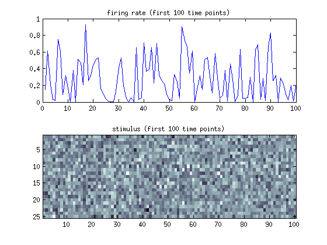
Plot firing rate as a function of s*g and s*f
[f_dot_s,g_dot_s] = meshgrid(linspace(-0.04,0.04,5e2),linspace(-0.04,0.04,5e2)); r_plot = r0.*(1+exp(((f_dot_s)-theta_f)./D_f)).^-1 .* ... (1+exp(((g_dot_s)-theta_g)./D_g)).^-1; % instantaneous firing rate figure; imagesc(r_plot); set(gca,'xtick',linspace(1,5e2,3),'ytick',linspace(1,5e2,3),... 'xticklabel',{'-0.04','0','0.04'},'yticklabel',{'0.04','0','-0.04'}); colormap bone colorbar title('White colors correspond to higher firing rates') xlabel('$\vec{f} \cdot \vec{s}(t)$','interpreter','latex','FontSize',15) ylabel('$\vec{g} \cdot \vec{s}(t)$','interpreter','latex','FontSize',15)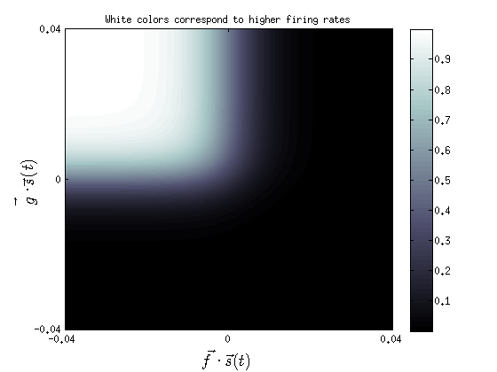
Compute Spike-Triggered Covariance
s_spk = [s(:,spk>0), s(:,spk>1), s(:,spk>2), s(:,spk>3), s(:,spk>4),... s(:,spk>5), s(:,spk>6), s(:,spk>7), s(:,spk>8), s(:,spk>9)]; sta = mean(s_spk,2); % average all stimuli that coincided with spikes nspk = sum(spk); sta_matrix = repmat(sta,1,size(s_spk,2)); Cstc = (1/(nspk-1)) .* (s_spk-sta_matrix) * (s_spk-sta_matrix)'; stim_mean = repmat(mean(s,2),1,T); Cprior = (1/(T-1)) .* (s-stim_mean) * (s-stim_mean)'; deltaC = Cstc-Cprior; [E,L] = eig(deltaC); % E = eigenvectors; L = diagonal eigenvalue matrix figure; imagesc(Cprior) title({'Stimulus Covariance Matrix',... 'the stimulus is white noise, so there is no covariance'}); figure; imagesc(Cstc) title({'Spike Triggered Covariance Matrix',... 'there are small patterns visible, but they are overpowered by the white noise'}); figure; imagesc(deltaC) title({'Spike Triggered Covariance Matrix, after subtracting stimulus covariance matrix.',... 'The correlation pattern is indicative of the edge filter used to generate our data'});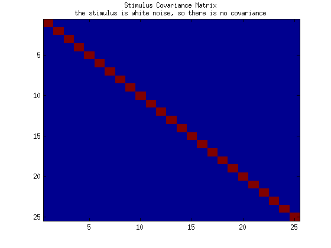 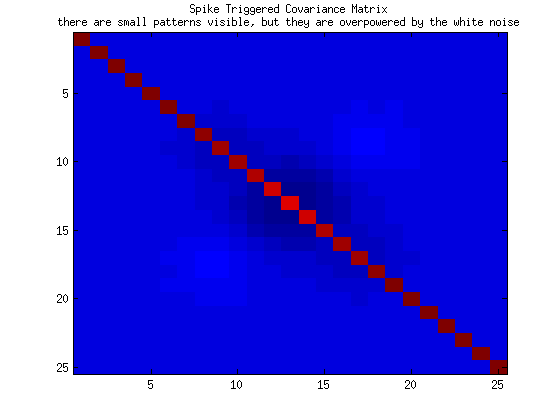 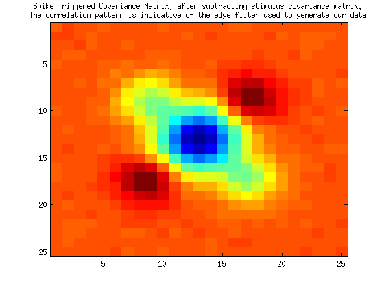
Determine the eigenvectors
figure; plot(100*abs(diag(L))./sum(abs(diag(L))),'-ob') xlabel('Eigenvalues ordered in decreasing magnitude') ylabel('Percent Variance Explained') title('The first two eigenvalues appear to be very important') stc1 = E(:,1)'; % Use eigenvectors with the largest change in covariance stc2 = E(:,2)'; figure; hold on plot(x,f ./ norm(f),'-b','LineWidth',2) plot(x,g ./ norm(g),'-b','LineWidth',2) plot(x,stc1 ./ norm(stc1),'--r','LineWidth',2) plot(x,stc2 ./ norm(stc1),'--r','LineWidth',2) xlabel('spatial dimension') ylabel('stimulus intensity') legend('f','g','stc1','stc2')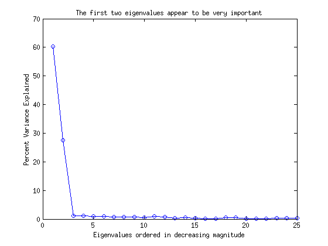 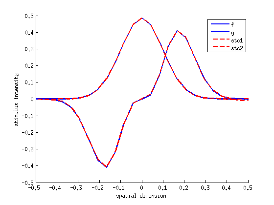
Estimate the firing rate using Bayes theorem and the two eigenvectors
Variable definitions: "spk_prior" is 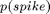, "stim_prior" is 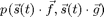, "likli" is 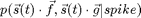
% spk_prior is the same as the overall mean firing rate. spk_prior = mean(r); % stim_prior is a histogram of the projections of s(:,t) onto the direction % identified by the spike-triggered covariance matrix. Note that since the % sta is equal to zero, we ignore it in our model. proj1 = stc1*s; proj2 = stc2*s; proj_bin_size = range(proj1)./1e2; stim_prior = @(x,y) sum(proj1<(x+proj_bin_size) & proj1>(x-proj_bin_size) & ... proj2<(y+proj_bin_size) & proj2>(y-proj_bin_size))./T; % The liklihood function is similar to the stimulus prior, but selects out % stimuli that actually elicited one or more spikes. proj_spk1 = stc1*s_spk; proj_spk2 = stc2*s_spk; likli = @(x,y) sum(proj_spk1<(x+proj_bin_size) & proj_spk1>(x-proj_bin_size) & ... proj_spk2<(y+proj_bin_size) & proj_spk2>(y-proj_bin_size))./size(s_spk,2); % Non-linear function r_est(s*f_est) relates the projected stimulus into an % estimated firing rate by Bayes Theorem: r_est = @(x,y) likli(x,y).*spk_prior./stim_prior(x,y); for aa = 1:100 r_est_100(aa) = r_est(stc1*s(:,aa),stc2*s(:,aa)); %#ok<SAGROW> end % Compare predicted to actual firing rate figure; subplot(2,1,1); hold on plot(r(1:100),'-b') plot(r_est_100,'-r') legend('actual firing rate','p(spike|s*f_{est})') title({'firing rate (first 100 time points)','The fit is nearly perfect - blue line is hidden beneath the red'}) subplot(2,1,2) imagesc(s(:,1:100)) colormap bone title('stimulus (first 100 time points)')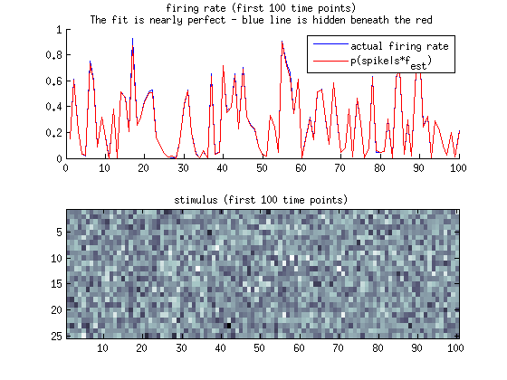